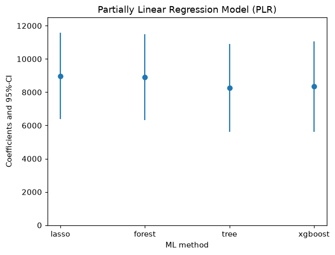

Same question, four learners
Last updated on 2026-10-30 | Edit this page
Estimated time: 25 minutes
Overview
Questions
- Does the answer depend on which machine learning model we use?
- Why does lasso need help from squared terms?
Objectives
- Fit the partially linear model with lasso, a random forest, a decision tree and boosting
- Explain why lasso with the raw variables gives a lower estimate than lasso with squared terms
- Summarise the four estimates in a table and a chart, and decide how to report them
From the masterclass
Slide 40, “You can then repeat the DML process, but change the ML method”, showed the chart you will make at the end of this episode. It also suggested reporting the spread across learners as a form of sensitivity analysis. In this episode we fit each learner in turn and see why lasso needs extra terms, following the DoubleML example cell by cell.
Set up
We start with the imports from the DoubleML example, followed by the
data and the data object from episode 3. We have added three lines of
our own. The first installs DoubleML if it is not there already, for
example in a fresh Colab notebook. The warnings filter
hides notices from scikit-learn saying that the lasso classifier’s
penalty argument will change in a future version (with the
versions pinned for this lesson it works as it should). The
display.width line stops pandas from hiding columns of the
summaries.
PYTHON
!pip install doubleml # once per session
import warnings
warnings.filterwarnings('ignore', category=FutureWarning) # scikit-learn notices about future versions
import numpy as np
import pandas as pd
import doubleml as dml
from doubleml.datasets import fetch_401K
from sklearn.preprocessing import PolynomialFeatures
from sklearn.linear_model import LassoCV, LogisticRegressionCV
from sklearn.ensemble import RandomForestClassifier, RandomForestRegressor
from sklearn.tree import DecisionTreeClassifier, DecisionTreeRegressor
from sklearn.preprocessing import StandardScaler
from sklearn.pipeline import make_pipeline
from xgboost import XGBClassifier, XGBRegressor
import matplotlib.pyplot as plt
import seaborn as sns
pd.set_option('display.width', 120)
data = fetch_401K(return_type='DataFrame')
# Set up basic model: Specify variables for data-backend
features_base = ['age', 'inc', 'educ', 'fsize', 'marr',
'twoearn', 'db', 'pira', 'hown']
# Initialize DoubleMLData (data-backend of DoubleML)
data_dml_base = dml.DoubleMLData(data,
y_col='net_tfa',
d_cols='e401',
x_cols=features_base)If from xgboost import ... fails on a Mac with a message
about libomp, have a look at the Setup page.
Lasso
Lasso is a linear regression that shrinks small
coefficients towards zero and drops some variables altogether. We need
two lasso models, LassoCV for savings and a penalised
logistic regression for eligibility. Both choose how hard to shrink by
five-fold cross-validation, and both need the variables on the same
scale, which is why each pipeline starts with
StandardScaler:
PYTHON
# Initialize learners
Cs = 0.0001*np.logspace(0, 4, 10)
lasso = make_pipeline(StandardScaler(), LassoCV(cv=5, max_iter=10000))
lasso_class = make_pipeline(StandardScaler(),
LogisticRegressionCV(cv=5, penalty='l1', solver='liblinear',
Cs = Cs, max_iter=1000))
np.random.seed(123)
# Initialize DoubleMLPLR model
dml_plr_lasso = dml.DoubleMLPLR(data_dml_base,
ml_l = lasso,
ml_m = lasso_class,
n_folds = 3)
dml_plr_lasso.fit(store_predictions=True)
print(dml_plr_lasso.summary)OUTPUT
coef std err t P>|t| 2.5 % 97.5 %
e401 5722.474647 1380.619171 4.144861 0.000034 3016.510795 8428.438499Lasso gives about $5,722, well below the $8,910 we got from the random forest in episode 3. Lasso fits straight lines, so it treats each extra $1,000 of income as adding the same amount to savings at every income level. Savings rise faster than that at higher incomes, and whatever the straight line misses stays in the residuals as confounding.
The DoubleML example deals with this by giving lasso squared terms for the four continuous confounders, so that it can draw curves. The code below builds a flexible data object with age, age², income, income² and so on:
PYTHON
# Set up a model according to regression formula with polynomials
features = data.copy()[['marr', 'twoearn', 'db', 'pira', 'hown']]
poly_dict = {'age': 2,
'inc': 2,
'educ': 2,
'fsize': 2}
for key, degree in poly_dict.items():
poly = PolynomialFeatures(degree, include_bias=False)
data_transf = poly.fit_transform(data[[key]])
x_cols = poly.get_feature_names_out([key])
data_transf = pd.DataFrame(data_transf, columns=x_cols)
features = pd.concat((features, data_transf),
axis=1, sort=False)
model_data = pd.concat((data.copy()[['net_tfa', 'e401']], features.copy()),
axis=1, sort=False)
# Initialize DoubleMLData (data-backend of DoubleML)
data_dml_flex = dml.DoubleMLData(model_data, y_col='net_tfa', d_cols='e401')OUTPUT
================== DoubleMLData Object ==================
------------------ Data summary ------------------
Outcome variable: net_tfa
Treatment variable(s): ['e401']
Covariates: ['marr', 'twoearn', 'db', 'pira', 'hown', 'age', 'age^2', 'inc', 'inc^2', 'educ', 'educ^2', 'fsize', 'fsize^2']
Instrument variable(s): None
No. Observations: 9915
------------------ DataFrame info ------------------
<class 'pandas.DataFrame'>
RangeIndex: 9915 entries, 0 to 9914
Columns: 15 entries, net_tfa to fsize^2
dtypes: float32(3), float64(6), int8(6)
memory usage: 639.2 KBNow we can fit lasso again, this time on the flexible data:
PYTHON
# Estimate the ATE in the flexible model with lasso
np.random.seed(123)
dml_plr_lasso = dml.DoubleMLPLR(data_dml_flex,
ml_l = lasso,
ml_m = lasso_class,
n_folds = 3)
dml_plr_lasso.fit(store_predictions=True)
lasso_summary = dml_plr_lasso.summary
print(lasso_summary)OUTPUT
coef std err t P>|t| 2.5 % 97.5 %
e401 8974.791097 1324.323636 6.776887 1.227932e-11 6379.164467 11570.417727With the squared terms, lasso gives about $8,975, which is close to the random forest. Lasso can only work with the variables we hand it, while random forests and boosting find curves without being told.
Random forest
These are steps 3 and 4 from episode 3, laid out as in the DoubleML example:
PYTHON
# Random Forest
randomForest = RandomForestRegressor(
n_estimators=500, max_depth=7, max_features=3, min_samples_leaf=3)
randomForest_class = RandomForestClassifier(
n_estimators=500, max_depth=5, max_features=4, min_samples_leaf=7)
np.random.seed(123)
dml_plr_forest = dml.DoubleMLPLR(data_dml_base,
ml_l = randomForest,
ml_m = randomForest_class,
n_folds = 3)
dml_plr_forest.fit(store_predictions=True)
forest_summary = dml_plr_forest.summary
print(forest_summary)OUTPUT
coef std err t P>|t| 2.5 % 97.5 %
e401 8909.634078 1321.822289 6.740417 1.579322e-11 6318.909997 11500.358158You should get the same $8,910 as in episode 3.
Challenge 1: a single decision tree
Fit the model with one decision tree for each prediction, using the
settings from the example. The ccp_alpha argument prunes
the tree, while min_samples_split and
min_samples_leaf stop it splitting small groups. Fill in
the two learners by replacing each ____ with one of the two
models (one predicts savings, the other eligibility) before you run the
cell:
PYTHON
# Trees
trees = DecisionTreeRegressor(
max_depth=30, ccp_alpha=0.0047, min_samples_split=203, min_samples_leaf=67)
trees_class = DecisionTreeClassifier(
max_depth=30, ccp_alpha=0.0042, min_samples_split=104, min_samples_leaf=34)
np.random.seed(123)
dml_plr_tree = dml.DoubleMLPLR(data_dml_base,
ml_l = ____,
ml_m = ____,
n_folds = 3)
dml_plr_tree.fit(store_predictions=True)
tree_summary = dml_plr_tree.summary
print(tree_summary)PYTHON
# Trees
trees = DecisionTreeRegressor(
max_depth=30, ccp_alpha=0.0047, min_samples_split=203, min_samples_leaf=67)
trees_class = DecisionTreeClassifier(
max_depth=30, ccp_alpha=0.0042, min_samples_split=104, min_samples_leaf=34)
np.random.seed(123)
dml_plr_tree = dml.DoubleMLPLR(data_dml_base,
ml_l = trees,
ml_m = trees_class,
n_folds = 3)
dml_plr_tree.fit(store_predictions=True)
tree_summary = dml_plr_tree.summary
print(tree_summary)OUTPUT
coef std err t P>|t| 2.5 % 97.5 %
e401 8260.06428 1348.624798 6.124805 9.079458e-10 5616.808246 10903.320314A single tree gives about $8,260. Its predictions move in a few dozen steps, so its residuals keep a little more of the confounding than the forest’s do, though the estimate still lands in the same range.
Challenge 2: boosting
Now try boosted trees from the XGBoost library. As slide 26 showed,
boosting grows trees in sequence, with each tree fixing the mistakes of
the one before. Here eta is the learning rate and
n_estimators is the number of trees. Fill in the two
learners by replacing each ____ with one of the two models
before you run the cell:
PYTHON
# Boosted Trees
boost = XGBRegressor(n_jobs=1, objective = "reg:squarederror",
eta=0.1, n_estimators=35)
boost_class = XGBClassifier(use_label_encoder=False, n_jobs=1,
objective = "binary:logistic", eval_metric = "logloss",
eta=0.1, n_estimators=34)
np.random.seed(123)
dml_plr_boost = dml.DoubleMLPLR(data_dml_base,
ml_l = ____,
ml_m = ____,
n_folds = 3)
dml_plr_boost.fit(store_predictions=True)
boost_summary = dml_plr_boost.summary
print(boost_summary)PYTHON
# Boosted Trees
boost = XGBRegressor(n_jobs=1, objective = "reg:squarederror",
eta=0.1, n_estimators=35)
boost_class = XGBClassifier(use_label_encoder=False, n_jobs=1,
objective = "binary:logistic", eval_metric = "logloss",
eta=0.1, n_estimators=34)
np.random.seed(123)
dml_plr_boost = dml.DoubleMLPLR(data_dml_base,
ml_l = boost,
ml_m = boost_class,
n_folds = 3)
dml_plr_boost.fit(store_predictions=True)
boost_summary = dml_plr_boost.summary
print(boost_summary)OUTPUT
coef std err t P>|t| 2.5 % 97.5 %
e401 8336.661463 1391.026647 5.993172 2.057874e-09 5610.299334 11063.023593Boosting gives about $8,337. Recent versions of XGBoost may print a
warning that use_label_encoder is not used. The argument is
left over from older versions and does no harm, so you can ignore the
warning.
Putting the four together
Let’s collect the four summaries into one table. This uses
tree_summary and boost_summary from the two
challenges, so if you skipped them, run their solutions first:
PYTHON
plr_summary = pd.concat((lasso_summary, forest_summary, tree_summary, boost_summary))
plr_summary.index = ['lasso', 'forest', 'tree', 'xgboost']
print(plr_summary[['coef', '2.5 %', '97.5 %']])OUTPUT
coef 2.5 % 97.5 %
lasso 8974.791097 6379.164467 11570.417727
forest 8909.634078 6318.909997 11500.358158
tree 8260.064280 5616.808246 10903.320314
xgboost 8336.661463 5610.299334 11063.023593We can show the same numbers as a chart with error bars:
PYTHON
errors = np.full((2, plr_summary.shape[0]), np.nan)
errors[0, :] = plr_summary['coef'] - plr_summary['2.5 %']
errors[1, :] = plr_summary['97.5 %'] - plr_summary['coef']
plt.errorbar(plr_summary.index, plr_summary.coef, fmt='o', yerr=errors)
plt.ylim([0, 12500])
plt.title('Partially Linear Regression Model (PLR)')
plt.xlabel('ML method')
_ = plt.ylabel('Coefficients and 95%-CI')
plt.show()
Each dot in the chart is one estimate of the effect of eligibility, and each line is its 95% confidence interval. You should see that the four estimates lie between about $8,260 and $8,975, and that their intervals overlap almost entirely.
Which number would you report?
The four estimates differ by about $700, which is around half a standard error. Good practice is to choose the main specification before you see the results, report it, and show the others alongside it, as the DoubleML example does. If you pick the number you like best after the fact, the robustness check turns into a search for significance.
Keep the lasso with raw variables ($5,722) in mind as well. A learner that cannot follow the shape of the confounders leaves confounding behind, and nothing in the output will warn you about it.
- DoubleML accepts any scikit-learn-style model for the two
predictions,
ml_lfor the outcome andml_mfor the treatment. - On the 401(k) data, lasso with squared terms, a random forest, a decision tree and boosting give estimates from $8,260 to $8,975.
- Lasso with only the raw variables gives $5,722, probably because its straight lines miss the curve in income and the confounding they miss stays in the estimate.
- It is good practice to choose the main estimate in advance and report the other learners’ estimates alongside it.